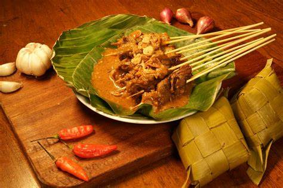

Sate Padang
Diposting pada 14.00 WIB, 09 Oktober 2023

Sate padang adalah sebutan untuk tiga jenis varian sate di Sumatera Barat, yaitu sate padang, sate padang panjang dan sate pariaman. Sate padang memakai bahan daging sapi, lidah, biji atau jeroan (jantung, usus, dan tetelan) dengan bumbu kuah kacang kental yang ditambah dengan cabai yang banyak sehingga rasanya pedas.
Selengkapnya